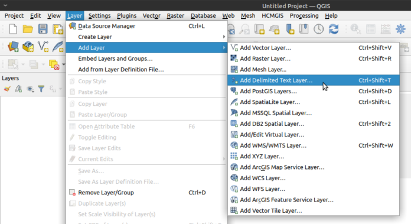
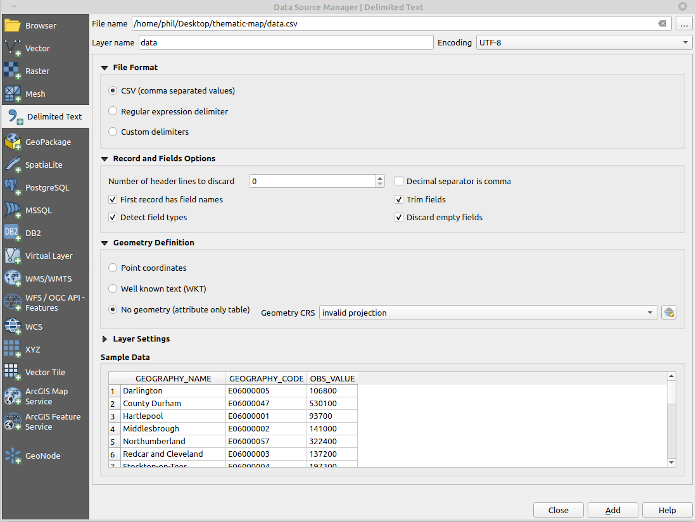
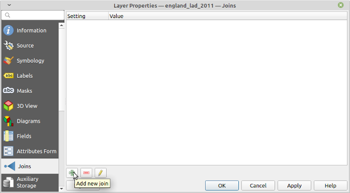
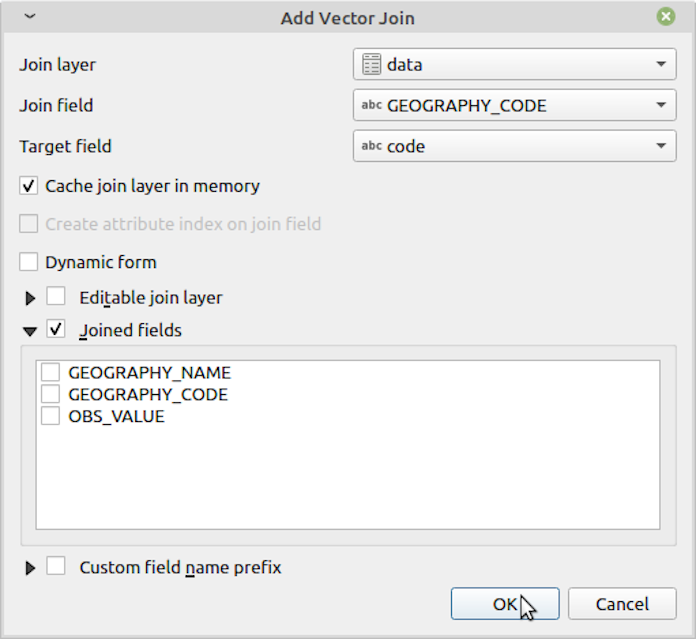

QGIS: Thematic Mapping with Open Source GIS¶
date: 2014-05-16
QGIS is a mature open source GIS package that I have been using to produce high quality thematic maps for my PhD. It is similar to proprietary packages like ArcMap but is, in my opinion, superior for the following reasons:
I’ve found QGIS less prone to crashes, particularly when handling large files (> ~100MB)
I think the QGIS interface makes it easier to understand what layers you’re currently working with and have available
Most importantly, QGIS is freely available and has no cost to download, making it possible for any individual to easily open, replicate and check your analysis
Obtaining QGIS¶
QGIS is available from http://www.qgis.org/en/site/forusers/download.html
Installation instructions for Ubuntu: https://philmikejones.me/tutorials/2019-01-03-install-qgis-ubuntu.html
Thematic Mapping with QGIS¶
Perhaps the most common function of GIS software, particularly in the social sciences, is to produce thematic maps. This involves the following steps:
Load the outline of the geographical area of interest.
Load data about the areas about a topic of interest.
‘Join’ the data to the boundary information using a unique key in both files.
Set the shading of the map based on the joined dataset.
This is easily achieved in QGIS. I’m using 2018 mid-year population estimates for English local authority districts and London boroughs (LADs) as an example. You can download the data and map and follow along from these sources (you’ll need to extract the shapefile before you can use it):
https://borders.ukdataservice.ac.uk/ukborders/easy_download/prebuilt/shape/England_lad_2011.zip
http://www.nomisweb.co.uk/api/v01/dataset/NM_31_1.data.csv?geography=1811939329…1811939332,1811939334…1811939336,1811939338…1811939497,1811939499…1811939501,1811939503,1811939505…1811939507,1811939509…1811939517,1811939519,1811939520,1811939524…1811939570,1811939575…1811939599,1811939601…1811939628,1811939630…1811939634,1811939636…1811939647,1811939649,1811939655…1811939664,1811939667&date=latest&sex=7&age=0&measures=20100&select=geography_name,geography_code,obs_value
Load a Vector (Map) Layer¶
I use shapefiles as these appear to be the de facto standard among GIS applications. Load a shapefile with SHIFT+CTRL+V or by clicking the ‘Add Vector Layer’ icon (bottom left of this screenshot, looks like a ‘V’):

Add vector layer¶
Add the england_lad_2011.shp layer, leave the defaults, and press
Add. If QGIS asks about using a fallback transformation use this; the
difference in accuracy is 2m rather than 1m (so negligible for our
purposes).
Add Data¶
To add data about the geography you’ve loaded and join it to the shapefile click ‘Add Delimited Text Layer’ (icon looks like a comma).

Add delimited text (csv) layer¶
Here we’re using a text delimited file (comma delimited, or .csv)
and this is a common format data is shared in (particularly for small
amounts of data). You should get the following dialogue box:

Delimited text dialogue box¶
The main thing to remember when loading a .csv file is to tell QGIS if your file contains geometry data or not. Here we’ve downloaded data that contains a geography code (a unique code for the LAD for joining purposes) but not actually geographical coordinates. Therefore make sure you select ‘No geometry (attribute only table)’ from the dialogue box.
‘Joining’ the Two¶
Once the data is loaded it’s time to ‘join’ it to the shapefile or other layer we loaded earlier. Right-click on the shapefile (geometry) layer and press ‘Properties’:
From there, select Joins, then the green plus:

Layer join dialogue box¶
Select your csv file (‘Join layer’). If you have only loaded one data layer (as we have) QGIS should automatically detect it. Then complete the following:
Join field:
GEOGRAPHY_CODETarget field:
codeTick
Joined fieldsand selectGEOGRAPHY_NAMEandOBS_VALUELeave all other settings as their defaults

Add vector join dialogue¶
The values you need will differ depending on the files you use and the source you obtain them from, but generally you’re trying to match a code to a code If you end up needing to match place names you must ensure these match exactly or QGIS won’t join them (e.g. ‘City of Aberdeen’ will not join to ‘Aberdeen, City of’).
Thematic Mapping¶
Once the join is completed you can create a thematic map by modifying the ‘Symbology’ tab of the layer properties. I typically change ‘Single Symbol’ to ‘Graduated’ and selecting an appropriate colour gradient:
The finished result should look something like this.